🔒
Privacy Notice: Technician names visible in some screenshots have been intentionally blurred to protect the privacy of individuals involved in this capstone project. All other data shown is sample/test data used during development and testing.
Why This Was Built
🎯 Problem Statement
❌
Manual tracking: Maintenance requests managed via spreadsheets and emails — no real-time visibility into request status or technician workload
❌
Delayed approvals: Operations Managers had no structured notification system for high-value requests — approvals were slow and inconsistent
❌
No cost automation: Total estimated costs calculated manually — error-prone and time-consuming for every request
❌
No audit trail: Zero digital record of maintenance history, spare parts consumed, or labor charges per vehicle
Who Uses It
👥 Users & Roles
🔧
Technician
Creates maintenance requests · Logs spare parts, consumables & labor charges · Updates approval status · Marks requests as Completed
👔
Operations Manager
Reviews high-value requests (>₹50,000) · Approves or rejects via Outlook & MS Teams · Monitors KPI dashboard for workload visibility
Request Lifecycle
🔄 4-Stage Approval Workflow
1
DRAFT
Technician logs vehicle maintenance request with service details and saves it
2
PENDING APPROVAL
Technician marks request ready for Operations Manager review
3
APPROVED
Operations Manager approves request after reviewing cost and invoice
4
COMPLETED
Technician finishes all maintenance work and closes the request
Built With
🛠️ Technology Stack
📱
Power Apps — Canvas App
3 screens covering Dashboard, Request creation, and Line item capture
⚙️
Power Automate — Cloud Flow
Automated cost calculation, HTML invoice generation, PDF conversion, and smart approval routing
🗂️
SharePoint Online — Lists
2 lists as data backend — master requests list and line items transaction list
☁️
OneDrive + Outlook + MS Teams
PDF invoice storage · Approval notifications via Outlook email and MS Teams simultaneously
Canvas App — Screen 1 of 3
📊 Scr_Maintenance_Dashboard
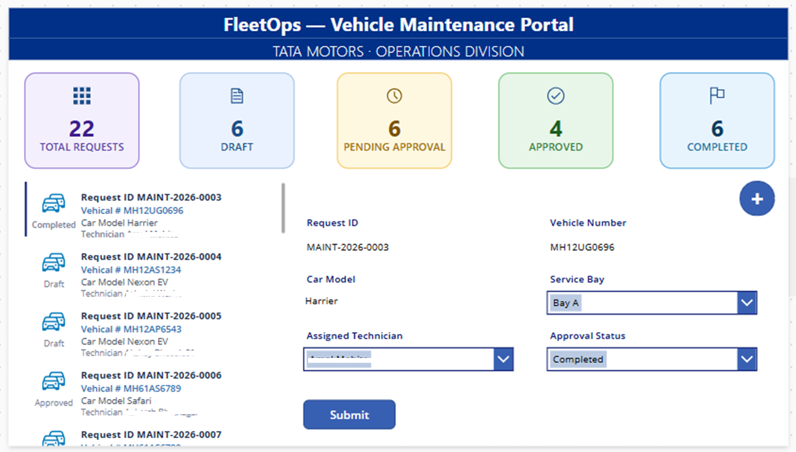
✅ Actual Screenshot — Scr_Maintenance_Dashboard
🔒
Technician names in the gallery and dropdown are blurred to protect personnel privacy
📊
5 KPI Cards: Real-time count of Total Requests, Draft, Pending Approval, Approved and Completed — driven by CountIf() from SharePoint list
📋
Request Gallery: Scrollable list of all maintenance requests — clicking a row loads full details on the right panel
🔄
Inline Status Update: Technician updates approval status of any request directly from this screen without navigating away
➕
Quick Add: The + button navigates to Scr_Maintenance_Request to create a new request in one click
Canvas App — Screen 2 of 3
📋 Scr_Maintenance_Request
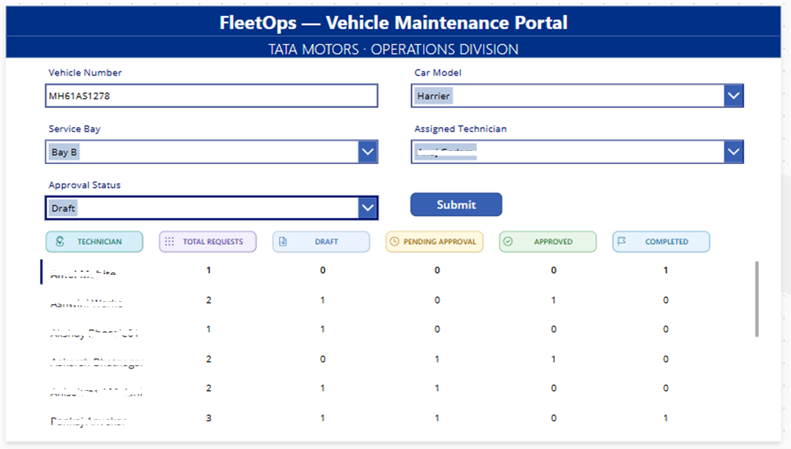
✅ Actual Screenshot — Scr_Maintenance_Request
🔒
Technician names in the assignment dropdown and the summary table are blurred to protect personnel privacy
🚗
Request Form: Technician enters Vehicle Number, selects Car Model, assigns Service Bay and picks the responsible Technician via a dropdown connected to SharePoint
💾
Draft Save: Request is saved with Draft status initially — no approval flow triggers until Technician explicitly submits for review
📊
Technician Summary Table: Shows per-technician request count breakdown across all 4 approval statuses — built using Distinct() + CountIf() PowerFx expressions
Canvas App — Screen 3 of 3
🔩 Scr_Maintenance_Items
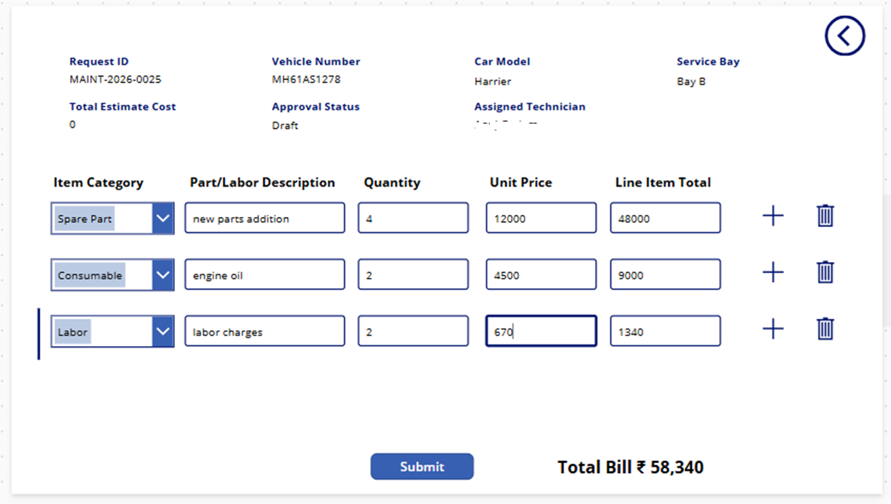
✅ Actual Screenshot — Scr_Maintenance_Items
🔒
Assigned Technician name shown in the screen header is blurred to protect personnel privacy
🔩
Line Item Gallery: Technician adds multiple rows of Spare Parts, Consumables or Labor — each with Item Category, Description, Quantity, Unit Price and auto-calculated Line Item Total
⚡
Automatic Flow Trigger: Saving any new line item instantly triggers the Power Automate cloud flow in the background — no manual action required
🧮
Running Total: Total Bill is computed and displayed at the bottom of the screen in real time so the Technician can track cost before submitting
Automation Engine
⚙️ Power Automate Cloud Flow
1
Trigger
New item inserted in Maintenance Items-JP SharePoint list
→
2
Get Items
Fetch all line items for the triggered Request ID
→
3
Calculate
Loop and sum all Line Item Totals → Total Estimated Cost
→
4
Update SP
Write Total Estimated Cost back to Maintenance Requests-JP
→
5
HTML Invoice
Generate CSS-styled HTML invoice table with all line items
→
6
PDF Convert
Convert HTML invoice to PDF and save to OneDrive
→
7
Smart Route
Check cost vs ₹50K threshold and route approval accordingly
🔴 Total Cost > ₹50,000
Approval request sent to Operations Manager via Outlook Email + MS Teams with PDF invoice attached. Awaits manual Approve or Reject response.
🟢 Total Cost ≤ ₹50,000
Request is automatically approved without any manual intervention — reducing Operations Manager workload for low-value maintenance jobs.
📸 Actual Power Automate Flow Steps
1
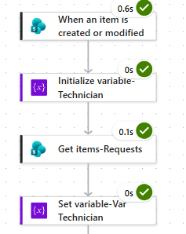
Flow Trigger — SharePoint item insert on Maintenance Items-JP
2
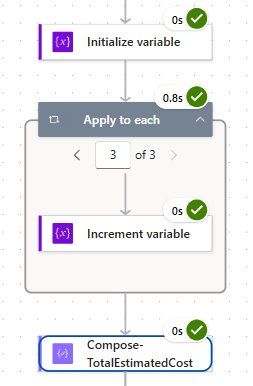
Total Estimated Cost calculation — loop and sum all line items
3
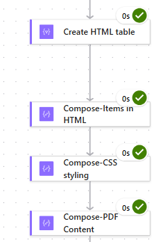
HTML Invoice generation with CSS styling applied to invoice table
4
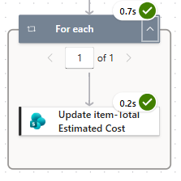
Update Maintenance Requests-JP with Total Estimated Cost
5
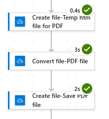
Convert HTML invoice to PDF format via OneDrive Convert File action
6
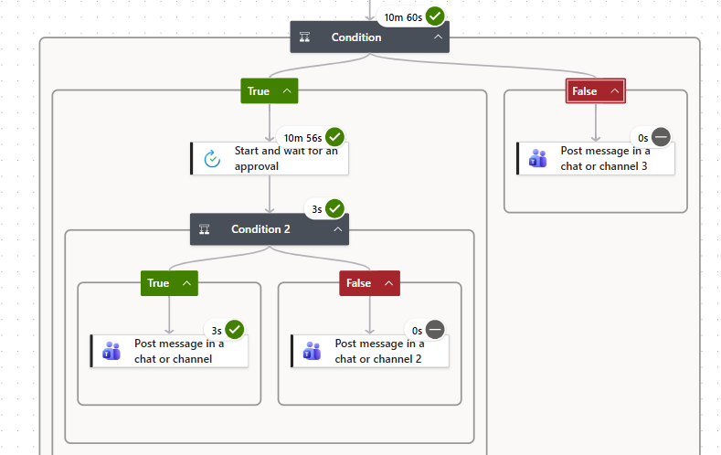
Approval routing — Condition check + send notification to Ops Manager
Proof of Automation — End to End
✉️ Approval Notification — Operations Manager
✅ PROOF OF WORK
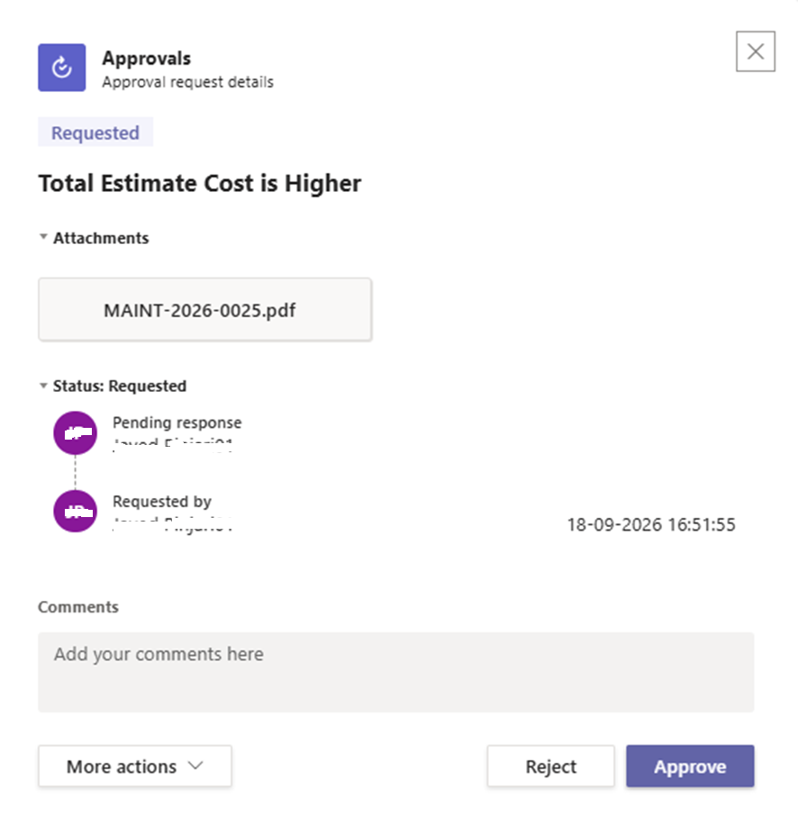
Actual Approval Notification received by Operations Manager via Outlook
📧
Auto-triggered email sent to Operations Manager when request total exceeds ₹50,000 — no manual email needed
📎
PDF invoice attached automatically to the approval email — generated and converted by Power Automate
✅
One-click Approve/Reject buttons directly inside the email — manager responds without opening the app
💬
Parallel MS Teams notification sent simultaneously for faster visibility and response
Proof of Automation — Invoice Generation
📄 PDF Invoice — Auto-Generated by Power Automate
✅ PROOF OF WORK
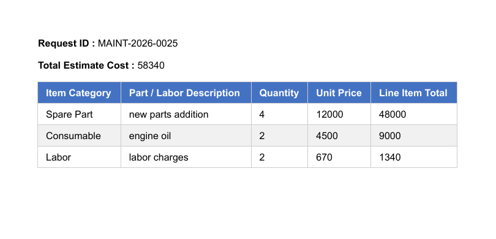
Actual PDF Invoice auto-generated by Power Automate and stored on OneDrive
🤖
100% Automated: Invoice created, CSS-styled, and converted to PDF without any manual input — triggered by a single line item save in the Canvas App
🎨
Professional Styling: HTML table with CSS formatting — item categories, descriptions, quantities, unit prices, line totals and grand total displayed cleanly
☁️
OneDrive Storage: PDF saved automatically for permanent record keeping, future audit reference, and email attachment
Data Backend
🗂️ SharePoint Lists — Data Storage
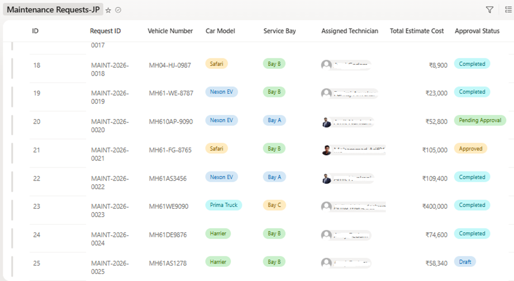
✅ Actual Screenshot — Maintenance Requests-JP SharePoint List
🔒
Technician names in the Assigned Technician column are blurred to protect personnel privacy
Request ID (Auto-generated)
Vehicle Number & Car Model
Assigned Technician (Person column)
Total Estimated Cost (Auto-updated by Flow)
Approval Status (Choice — 4 stages)
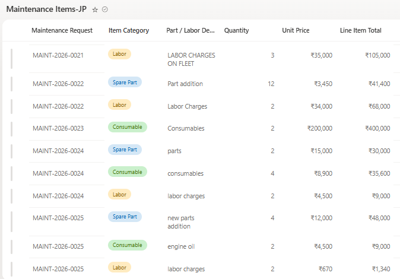
✅ Actual Screenshot — Maintenance Items-JP SharePoint List
Request ID (Lookup to master list)
Item Category (Spare Part / Consumable / Labor)
Line Item Total (Quantity × Unit Price)
Triggers Power Automate flow on every insert
Enterprise-Grade Deployment
🚀 ALM & Environment Promotion — DEV → PROD
📦
Solution-first development. The entire app — canvas app, cloud flow, connection references, and environment variables — was packaged into a single unmanaged solution in DEV, then exported and imported as a managed solution in PROD.
🧩
Environment variables for every data source. SharePoint site URL and list names were parameterized as environment variables rather than hardcoded, so the same solution file runs against different SharePoint sites per environment.
🔌
Connection references, not hardcoded connections. SharePoint, Teams, Outlook, and approvals connections travel with the solution as connection references, re-pointed to PROD connections during import.
🌐
Two isolated environments. A dedicated DEV environment for build-and-test and a separate PROD environment for live use — keeping development changes from ever touching production data.
📸 ALM Journey — DEV to PROD
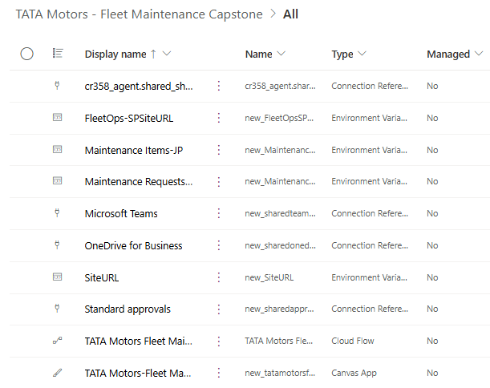
Solution in DEV environment — canvas app, cloud flow, connection references, and environment variables packaged together for clean promotion
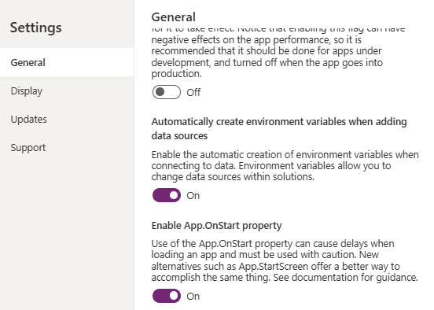
Key setup step in Power Apps — enabling "Automatically create environment variables when adding data sources," so every new data connection is parameterized by default rather than hardcoded
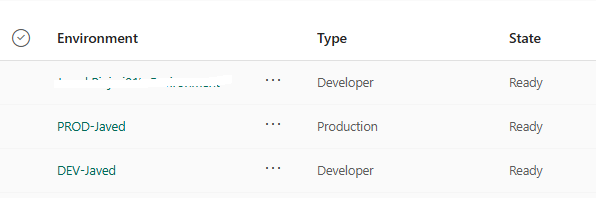
Power Platform environments used for this project — a dedicated DEV environment for build-and-test, and a separate PROD environment for the live app
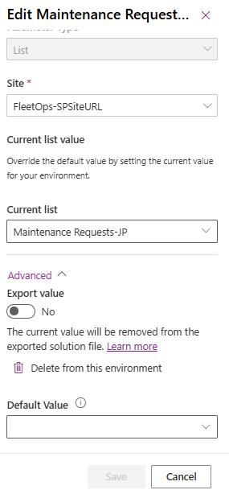
Environment variable for the Maintenance Requests-JP SharePoint list, with its own current value in each environment
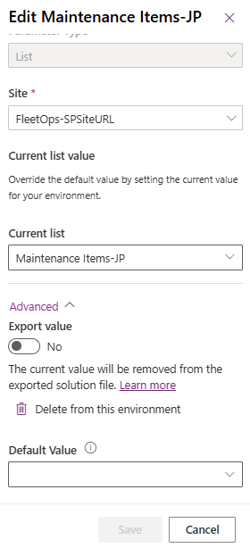
Environment variable for the Maintenance Items-JP SharePoint list, following the same pattern as the Requests list
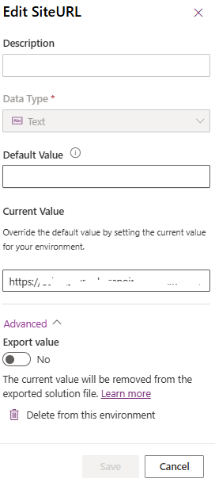
Environment variable for the SharePoint site itself — the single source of truth that every list-level variable above resolves against per environment
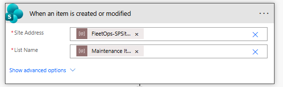
Power Automate flow trigger in the PROD environment — reading the site and list through environment variables, confirming the promoted solution is correctly pointed at production data with zero hardcoded values
What Was Achieved
📈 Business Impact
100%
Invoice generation automated — zero manual effort
4
Structured digital approval stages replacing ad-hoc email chains
₹50K
Smart threshold — low-value requests auto-approved instantly
3
Canvas App screens covering the full maintenance lifecycle
2
SharePoint lists providing a complete digital audit trail
0
Manual steps for cost calculation — fully automated by the flow
Built By
JP
Javed Pinjari
Power Platform Developer · Microsoft 365 Enthusiast · Capstone Project 2025